# Carregar pacotes
library(incidence2) # Para agregar e visualizar
library(simulist) # Para simular dados de linelist
library(tidyverse) # Para funções do {dplyr} e {ggplot2} e o pipe %>%Agregar e visualizar
NotaPerguntas
- Como agregar e resumir dados de casos?
- Como visualizar dados agregados?
- Qual é a distribuição dos casos no tempo, espaço, sexo e idade?
DicaObjetivos
- Simular dados sintéticos de surto
- Converter dados de linelist (lista de casos) em incidência ao longo do tempo
- Criar curvas epidêmicas a partir de dados de incidência
ImportantePré-requisitos
Pacotes do R instalados: {incidence2}, {simulist}, {tidyverse}.
NotaDetalhes
Instale estes pacotes caso ainda não estejam instalados (você pode configurar o espelho brasileiro do CRAN com options(repos = c(CRAN = "https://cran-r.c3sl.ufpr.br/"))):
if (!base::require("pak")) install.packages("pak")
pak::pak(c("incidence2", "simulist", "tidyverse"))Se você encontrar qualquer mensagem de erro, acesse a página principal de configuração.
Introdução
Em um fluxo de trabalho analítico, a análise exploratória de dados (AED) é uma etapa importante antes da modelagem formal. A AED ajuda a determinar relações entre variáveis e resumir suas principais características, frequentemente por meio da visualização de dados.
Este episódio foca na AED de dados de surto usando pacotes do R. Aspectos fundamentais da AED na análise de epidemias são pessoa, lugar e tempo. É útil identificar como eventos observados — como casos confirmados, hospitalizações, óbitos e recuperações — mudam ao longo do tempo e como variam entre diferentes locais e fatores demográficos, incluindo sexo, idade e outros.
Vamos começar carregando o pacote {incidence2} para agregar os dados da linelist de acordo com características específicas e visualizar as curvas epidêmicas resultantes (epicurvas) que representam graficamente o número de novos eventos (ou seja, a incidência de casos ao longo do tempo). Usaremos o pacote {simulist} para simular os dados de surto a serem analisados. Usaremos o operador pipe (%>%) para conectar algumas de suas funções, incluindo outras dos pacotes {dplyr} e {ggplot2}, portanto vamos carregar também o pacote {tidyverse}.
Dados sintéticos de surto
Para ilustrar o processo de condução da AED em dados de surto, geraremos uma linelist para um surto hipotético de doença utilizando o pacote {simulist}. O {simulist} gera dados simulados para um surto de acordo com uma configuração fornecida. Sua configuração mínima pode gerar uma linelist, como mostrado no bloco de código abaixo:
# Definir semente para reprodutibilidade
set.seed(1)
# Simular dados de linelist para um surto com tamanho entre 1000 e 1500
sim_data <- simulist::sim_linelist(outbreak_size = c(1000, 1500)) %>%
dplyr::as_tibble() # para uma saída simples em data frame
# Exibir o conjunto de dados simulado
sim_data# A tibble: 1,546 × 13
id case_name case_type sex age date_onset date_reporting
<int> <chr> <chr> <chr> <int> <date> <date>
1 1 Frank Branham confirmed m 36 2023-01-01 2023-01-01
2 3 Najee Reeder probable f 11 2023-01-11 2023-01-11
3 6 Tashina Connor probable f 52 2023-01-18 2023-01-18
4 8 Tracy Li confirmed f 35 2023-01-23 2023-01-23
5 11 Julianna Dethouars probable f 76 2023-01-30 2023-01-30
6 14 Meeka Montoya suspected f 36 2023-01-24 2023-01-24
7 15 Tareefa el-Meer suspected f 66 2023-01-31 2023-01-31
8 16 Mu'taz el-Kader confirmed m 79 2023-01-30 2023-01-30
9 20 Zayyaan al-Amiri suspected m 69 2023-01-27 2023-01-27
10 21 Kevon Ablay confirmed m 86 2023-02-09 2023-02-09
# ℹ 1,536 more rows
# ℹ 6 more variables: date_admission <date>, outcome <chr>,
# date_outcome <date>, date_first_contact <date>, date_last_contact <date>,
# ct_value <dbl>Este conjunto de dados de linelist contém registros simulados de eventos em nível individual durante um surto.
NotaDetalhes
Recursos adicionais sobre dados de surto
A configuração acima é a padrão do {simulist}. Ela inclui uma série de pressupostos sobre a transmissibilidade e a gravidade do patógeno. Se você quiser saber mais sobre a função simulist::sim_linelist() e outras funcionalidades, consulte o site da documentação.
Você também pode encontrar conjuntos de dados de surtos reais anteriores no pacote do R outbreaks.
Agregar a linelist
Muitas vezes queremos analisar e visualizar o número de eventos que ocorrem em um determinado dia ou semana, em vez de focar nos casos individuais. Isso exige converter os dados da linelist em dados de incidência. O pacote {incidence2} oferece uma função útil chamada incidence2::incidence() para agregar dados de casos em torno de eventos com data. Ele também pode agregar dados segundo outras características (por exemplo, sexo). O bloco de código fornecido abaixo demonstra a criação de um objeto da classe <incidence2> a partir dos dados simulados da linelist de Ebola com base na data de início dos sintomas.
# Criar um objeto de incidência agregando dados de casos com base na data de início dos sintomas
daily_incidence <- incidence2::incidence(
sim_data,
date_index = "date_onset",
interval = "day" # Agregar por intervalos diários
)
# Visualizar os dados de incidência
daily_incidence# incidence: 232 x 3
# count vars: date_onset
date_index count_variable count
<date> <chr> <int>
1 2023-01-01 date_onset 1
2 2023-01-11 date_onset 1
3 2023-01-18 date_onset 1
4 2023-01-23 date_onset 1
5 2023-01-24 date_onset 1
6 2023-01-27 date_onset 2
7 2023-01-29 date_onset 1
8 2023-01-30 date_onset 2
9 2023-01-31 date_onset 2
10 2023-02-01 date_onset 1
# ℹ 222 more rowsVocê pode usar valores numéricos, como o número de dias para agrupar, ou cadeias de caracteres (strings de texto) como day, week, epiweek, months e outras para definir o intervalo de agregação:
NotaNo Brasil: semana epidemiológica
A vigilância brasileira agrega os dados por Semana Epidemiológica (SE), que corresponde ao epiweek do {incidence2}. Por convenção internacional, as semanas epidemiológicas são contadas de domingo a sábado: a primeira semana do ano é a que contém o maior número de dias de janeiro, e a última é a que contém o maior número de dias de dezembro. Fonte: Caderno de Análise — Roteiro para uso do SINAN Net (SVS/MS, 2019), seção “Calendário Epidemiológico”: https://portalsinan.saude.gov.br/images/documentos/Agravos/Violencia/CADERNO_ANALISE_SINAN_Marco_2019_V1.pdf.
# Criar um objeto de incidência agregando dados de casos com base na data de início dos sintomas
weekly_incidence <- incidence2::incidence(
sim_data,
date_index = "date_onset",
interval = "week" # Agregar por intervalos semanais
)
# Visualizar os dados de incidência
weekly_incidence# incidence: 38 x 3
# count vars: date_onset
date_index count_variable count
<isowk> <chr> <int>
1 2022-W52 date_onset 1
2 2023-W02 date_onset 1
3 2023-W03 date_onset 1
4 2023-W04 date_onset 5
5 2023-W05 date_onset 16
6 2023-W06 date_onset 10
7 2023-W07 date_onset 22
8 2023-W08 date_onset 16
9 2023-W09 date_onset 19
10 2023-W10 date_onset 44
# ℹ 28 more rowsCom o pacote {incidence2}, você pode especificar o intervalo de tempo desejado (por exemplo, dia, semana etc.) e categorizar os casos por um ou mais fatores. Abaixo está um trecho de código demonstrando casos semanais agrupados pela data de início dos sintomas, sexo e tipo de caso.
# Agrupar dados de incidência por semana, considerando sexo e tipo de caso
weekly_group_incidence <- incidence2::incidence(
sim_data,
date_index = "date_onset",
interval = "week", # Agregar por intervalos semanais
groups = c("sex", "case_type") # Agrupar por sexo e tipo de caso
)
# Visualizar os dados de incidência
weekly_group_incidence# incidence: 202 x 5
# count vars: date_onset
# groups: sex, case_type
date_index sex case_type count_variable count
<isowk> <chr> <chr> <chr> <int>
1 2022-W52 m confirmed date_onset 1
2 2023-W02 f probable date_onset 1
3 2023-W03 f probable date_onset 1
4 2023-W04 f confirmed date_onset 1
5 2023-W04 f suspected date_onset 1
6 2023-W04 m confirmed date_onset 2
7 2023-W04 m suspected date_onset 1
8 2023-W05 f confirmed date_onset 5
9 2023-W05 f probable date_onset 2
10 2023-W05 f suspected date_onset 2
# ℹ 192 more rows
NotaPreenchimento de datas
Quando os casos são agrupados por diferentes fatores, é possível que os eventos envolvendo esses grupos apresentem intervalos de datas diferentes no objeto incidence2 resultante. Por exemplo:
# Criar um objeto de incidência diária agrupado por sexo
incidence2::incidence(
sim_data,
date_index = "date_onset",
groups = "sex",
interval = "week",
complete_dates = FALSE # Padrão
)# incidence: 73 x 4
# count vars: date_onset
# groups: sex
date_index sex count_variable count
<isowk> <chr> <chr> <int>
1 2022-W52 m date_onset 1
2 2023-W02 f date_onset 1
3 2023-W03 f date_onset 1
4 2023-W04 f date_onset 2
5 2023-W04 m date_onset 3
6 2023-W05 f date_onset 9
7 2023-W05 m date_onset 7
8 2023-W06 f date_onset 3
9 2023-W06 m date_onset 7
10 2023-W07 f date_onset 10
# ℹ 63 more rowsO pacote {incidence2} fornece uma função chamada incidence2::complete_dates() para garantir que um objeto de incidência tenha o mesmo intervalo de datas para cada grupo. Por padrão, contagens ausentes para um determinado grupo serão preenchidas com 0 para aquela data.
Essa funcionalidade também está disponível dentro da função incidence2::incidence(), definindo o valor de complete_dates como TRUE.
# Criar um objeto de incidência diária agrupado por sexo
incidence2::incidence(
sim_data,
date_index = "date_onset",
groups = "sex",
interval = "week",
complete_dates = TRUE # Preencher datas e contagens ausentes
)# incidence: 78 x 4
# count vars: date_onset
# groups: sex
date_index sex count_variable count
<isowk> <chr> <chr> <int>
1 2022-W52 f date_onset 0
2 2022-W52 m date_onset 1
3 2023-W01 f date_onset 0
4 2023-W01 m date_onset 0
5 2023-W02 f date_onset 1
6 2023-W02 m date_onset 0
7 2023-W03 f date_onset 1
8 2023-W03 m date_onset 0
9 2023-W04 f date_onset 2
10 2023-W04 m date_onset 3
# ℹ 68 more rows
DicaDesafio
Use a linelist sim_data para:
- Calcular a incidência de casos a cada 2 semanas para duas datas diferentes, a data de início dos sintomas e a data do desfecho, e duas categorias diferentes, sexo e tipo de caso.
- Salvar o resultado em um objeto
<incidence2>chamadobiweekly_incidence.
NotaDica
Como mencionado acima, para configurar o intervalo de agregação podemos usar valores numéricos ou cadeias de caracteres (strings). Ou consulte o manual de referência da função incidence2::incidence() offline usando ?incidence2::incidence() ou online.
Para agregar por dois ou mais índices de data, veja um exemplo neste guia prático sobre Simular, limpar, validar linelist e traçar curvas epidêmicas. Lá contamos a incidência para três datas diferentes no mesmo objeto.
NotaChecklist
Por que converter a linelist em incidência?
Para analisar dados por pessoa, lugar e tempo:
- Acompanhar como os eventos (casos, hospitalizações, óbitos, recuperações) mudam ao longo do tempo (por dia ou semana).
- Comparar padrões entre locais e grupos demográficos (por exemplo, idade, sexo, localização).
Também descrever e preparar os dados antes da modelagem. (Mais sobre isso no próximo conjunto de tutoriais!)
Visualização
Os objetos incidence2 podem ser visualizados usando a função plot() do pacote base do R. O gráfico resultante é chamado de curva epidêmica, ou epicurva (epicurve) de forma abreviada. Os seguintes trechos de código geram epicurvas para os objetos de incidência daily_incidence e weekly_group_incidence mencionados acima.
# Traçar dados de incidência diária
plot(daily_incidence)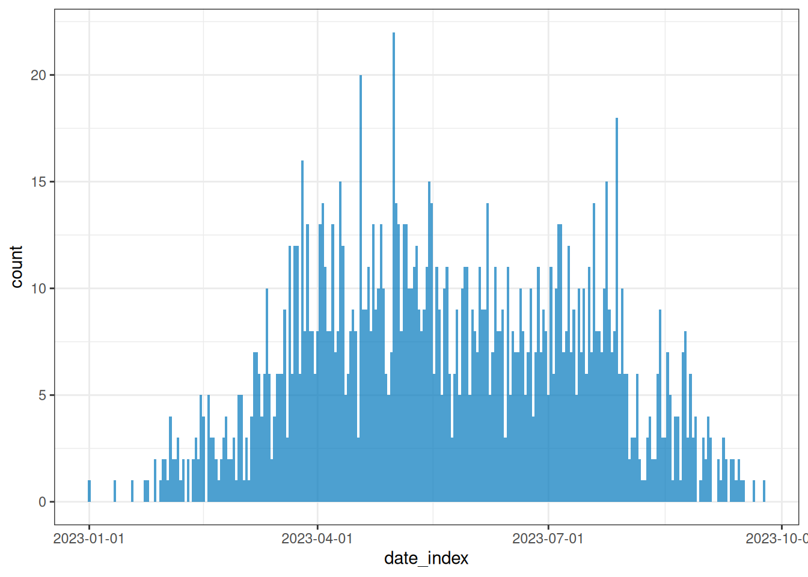
Você pode optar pela unidade de tempo de agregação mais adequada para descrever o padrão de propagação ou transmissão.
# Traçar dados de incidência semanal
plot(weekly_incidence)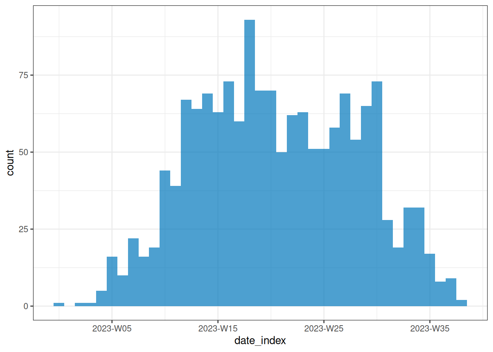
A visualização de um objeto <incidence2> baseia-se no pacote {ggplot2}, portanto camadas do ggplot podem ser adicionadas ao gráfico como mostrado abaixo.
# Traçar dados de incidência semanal
plot(weekly_incidence) +
ggplot2::labs(
x = "Time (in weeks)", # rótulo do eixo x
y = "Number of cases", # rótulo do eixo y
title = "Epidemic curve, simulated outbreak",
subtitle = "Weekly case incidence by date of onset"
)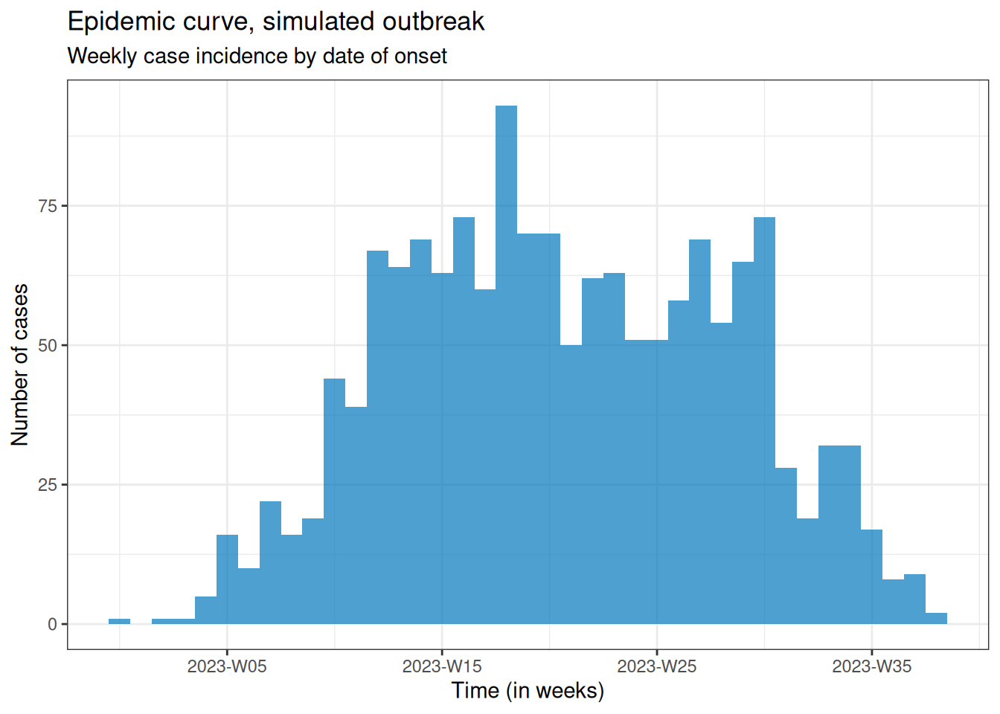
Além disso, forneça um gráfico estratificado por categorias para comparar padrões de transmissão entre diferentes grupos demográficos.
# Traçar dados de incidência semanal
plot(weekly_group_incidence) +
ggplot2::labs(
x = "Time (in weeks)", # rótulo do eixo x
y = "weekly cases" # rótulo do eixo y
)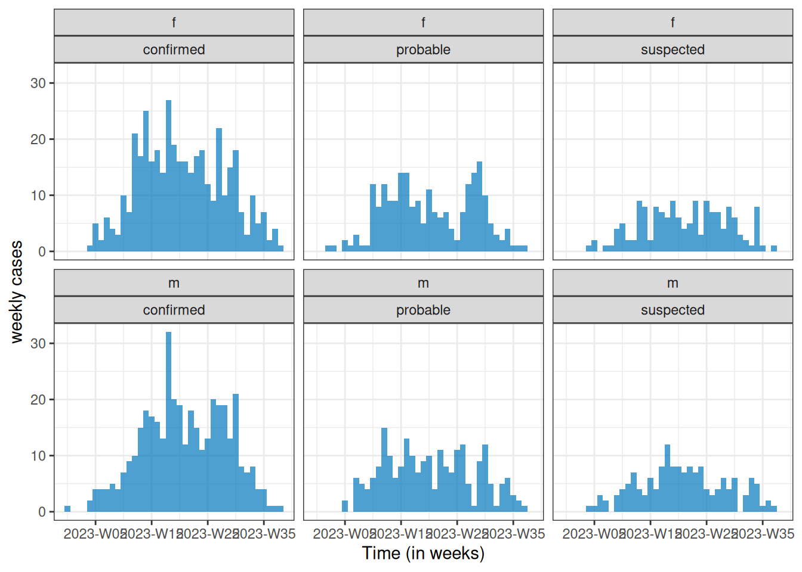
NotaEstética facilitada
Descubra como você pode usar os argumentos na função plot() para configurar a estética dos seus objetos <incidence2>.
weekly_group_incidence %>%
plot(fill = "case_type")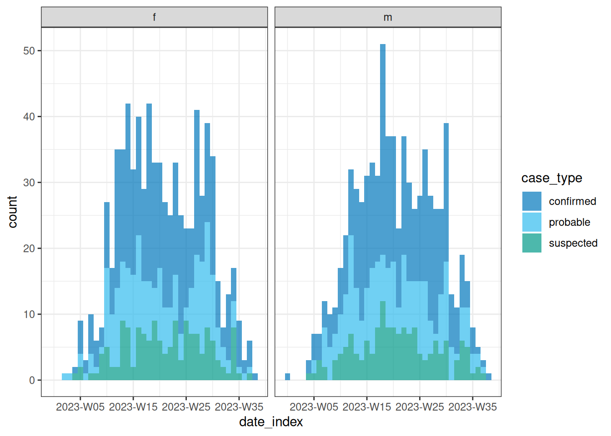
Alguns deles incluem show_cases = TRUE, angle = 45 e n_breaks = 5. Experimente usá-los e veja o impacto no gráfico resultante.
weekly_group_incidence %>%
plot(fill = "sex", angle = 45)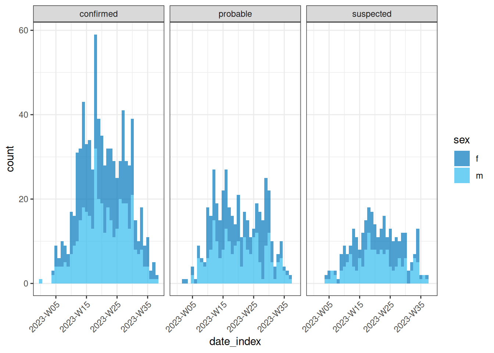
Convidamos você a conferir o manual de referência da função plot().
DicaDesafio
Use o objeto biweekly_incidence criado no desafio anterior para:
- Visualizar a curva de incidência.
- Identificar qual combinação de argumentos em
plot()funciona melhor.
NotaDica
Teste se argumentos como fill, nrow, show_cases, angle ou n_breaks melhoram o gráfico.
Encontre mais um exemplo neste guia prático sobre Traçar dados de incidência estratificados por idade mensalmente a partir da data de nascimento.
NotaChecklist
Quais são os desafios comuns ao agregar linelist em incidência?
Agregar por uma ou mais variáveis conjuntamente:
- Por data (por exemplo, data de notificação e data do óbito) para análise de gravidade do surto.
- Por grupos (por exemplo, idade, sexo ou localização) para análises estratificadas de transmissão ou gravidade.
Obter uma série temporal completa para ter o mesmo intervalo de datas em cada agrupamento.
Como descrever uma curva epidêmica?
Podemos descrever epicurvas comparando a tendência de novos casos ao longo do tempo entre grupos demográficos. Algumas características que podemos comparar são:
- Tamanho do pico ou platô,
- Tempo até o pico (se houver),
- Taxa de crescimento.
Por exemplo, na figura abaixo, temos duas curvas epidêmicas para o mesmo surto estratificadas por sexo. Na população, a maioria dos casos foi observada em pessoas do sexo feminino.
- O tamanho do pico no sexo feminino foi de ~70 casos incidentes; no sexo masculino, foi de ~22 casos incidentes.
- O pico no sexo feminino ocorreu por volta da semana epidemiológica 15; no sexo masculino, por volta da semana 20.
- A taxa de crescimento no sexo feminino pode ser maior do que no masculino. Em um mesmo período de tempo (cerca de 15 semanas), os casos no sexo feminino foram mais de 3 vezes superiores aos casos no sexo masculino.
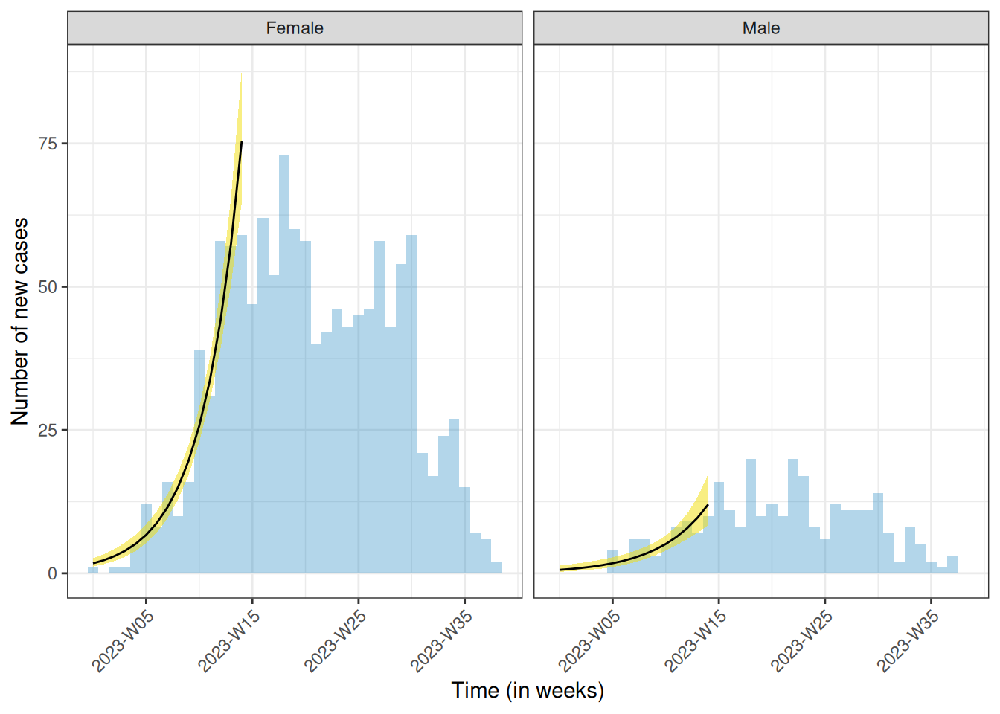
Você pode estimar o pico — o momento com o maior número de casos registrados — usando incidence2::estimate_peak(). Você também pode converter a contagem de casos novos ou incidentes para cumulativa usando incidence2::cumulate(), se necessário para suas análises posteriores. Encontre exemplos sobre essas funções na seção da vinheta do incidence2 sobre “Bootstrapping e estimativa de picos”.
AvisoAtenção
Atraso de notificação
Casos recentes são frequentemente subcontados. Se houver um intervalo de tempo entre a ocorrência de um evento e o seu registro, os períodos de tempo mais recentes parecerão artificialmente baixos simplesmente porque muitos casos ainda não foram registrados. Isso pode dar a impressão de um declínio recente quando, na verdade, trata-se apenas de um atraso de notificação (também conhecido como efeito de censura à direita).
Embora isso não seja um problema para o surto já encerrado mostrado acima, essa é uma consideração fundamental para surtos em andamento ou em crescimento, nos quais um declínio aparente recente pode refletir apenas o atraso na notificação, e não uma desaceleração real.
NotaNo Brasil: dados preliminares e dados finais
Para o SINAN, o DATASUS publica duas bases: os dados preliminares, passíveis de atualização e revisão pelas áreas técnicas responsáveis pela vigilância dos agravos, e os dados finais, que não são mais atualizados para os anos já disponibilizados. É essa diferença de tempo entre o registro e a consolidação que produz o atraso de notificação e a censura à direita nas últimas semanas de uma curva epidêmica. Fonte: SINAN — instrucional para download de microdados.
NotaDiscussão
Por que usamos curvas epidêmicas?
De modo geral, para descrever a magnitude e a tendência temporal do surto, além das diferenças entre grupos (por exemplo, demográficos). Ela pode fornecer evidências para responder a perguntas como: Devemos priorizar intervenções direcionadas em vez de intervenções em massa?
Também pode nos ajudar a determinar o padrão de propagação (como fonte pontual, fonte propagada, entre outros) e investigar um surto com base em parâmetros da doença (como determinar o momento de exposição a partir do período de incubação).
NotaSolução
Identificar o tipo de epidemia ou modo de transmissão
Recomendamos a leitura da seção sobre “Análise de uma curva epidêmica”. Ela descreve alguns padrões de propagação que resumimos aqui: | Tipo | Descrição | Formato da curva epidêmica | Exemplo | |——|————-|————————|———| | Fonte pontual | Exposição única e compartilhada durante um curto período | Aumento rápido → pico → queda rápida (reflete o período de incubação) | Intoxicação alimentar a partir de uma única refeição | | Fonte contínua | Exposição prolongada à mesma fonte | Aumento gradual, sem pico claro, duração prolongada | Abastecimento de água contaminada ao longo de vários dias | | Fonte propagada | Transmissão pessoa a pessoa | Ondas sucessivas ou múltiplos picos | Sarampo, COVID-19 | | Fonte intermitente | Exposição repetida, porém irregular, à mesma fonte | Múltiplos picos em intervalos irregulares e tamanhos variáveis | Restaurante que serve comida contaminada periodicamente |
Você também pode concluir esta lição rápida (Quick-Learn) sobre “Usar uma curva epidêmica para determinar o modo de propagação” para treinar como determinar o modo provável de propagação de um surto analisando uma curva epidêmica.
NotaSolução
Investigar surtos
A partir de uma epicurva de casos incidentes pela data de início dos sintomas, podemos determinar:
- O período de incubação, se o momento da exposição for conhecido; ou
- O momento da exposição, se o período de incubação for conhecido.
O período de incubação é definido como o tempo médio desde a infecção até os primeiros sintomas clínicos (Figura 2 em On Kwok et al.). Isso varia de indivíduo para indivíduo para a mesma doença.
Por exemplo, o sarampo tem um período de incubação com variação de 7 a 20 dias (mínimo/máximo) e mediana de 12,5 dias.
Using Lessler J, Reich N, Brookmeyer R, Perl T, Nelson K, Cummings D (2009).
"Incubation periods of acute respiratory viral infections: a systematic
review." _The Lancet Infectious Diseases_.
doi:10.1016/S1473-3099(09)70069-6
<https://doi.org/10.1016/S1473-3099%2809%2970069-6>..
To retrieve the citation use the 'get_citation' function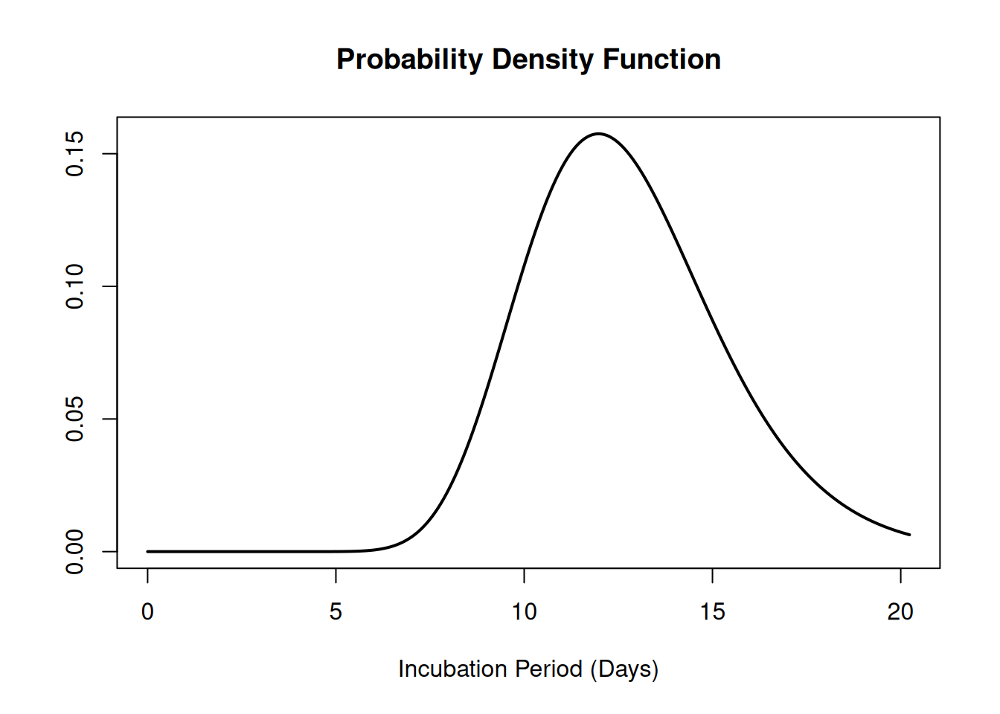
Conhecer o período de incubação do patógeno nos permite estimar quando a exposição ocorreu, fazendo a contagem regressiva a partir do início dos sintomas na curva epidêmica:
- O início da exposição pode ser estimado subtraindo o período de incubação mínimo da data do primeiro caso.
- O fim da exposição pode ser estimado subtraindo o período de incubação máximo da data do último caso.
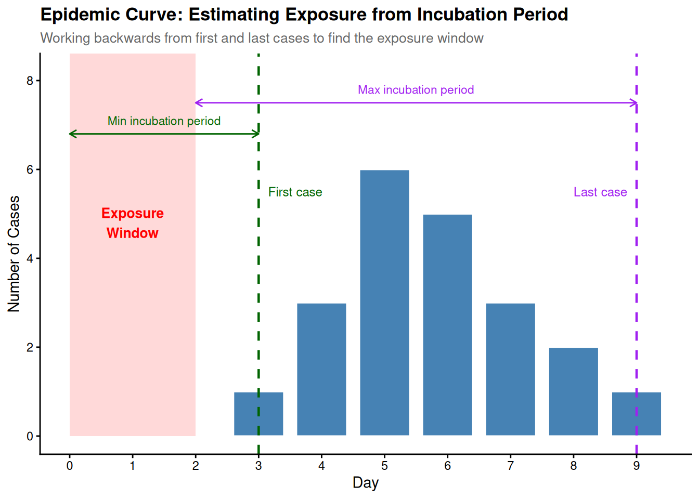
NotaChecklist
Um surto pode ser descrito usando:
- Gráficos de incidência ou curvas epidêmicas a partir de linelist (usando
{incidence2}) - Redes de contato a partir de dados de contatos (usando
{epicontacts}) - Atrasos entre eventos com data a partir de linelist (usando
{cleanepi}ou{tidyverse})
No próximo conjunto de tutoriais, aprenderemos a subsidiar a avaliação de um surto com base em parâmetros estimados de transmissão (taxa de crescimento e número de reprodução) e gravidade (risco de letalidade) usando modelos mais abrangentes e distribuições estatísticas.
Para relembrar conceitos sobre atrasos e distribuições de probabilidade, você pode revisar conceitos introdutórios em alguns episódios que apresentam atrasos para dados de surto.
DicaDesafio
Qual combinação de unidade de tempo, categorias de casos e argumentos em plot() melhor captura o padrão de surto de sim_data e por quê?
Escreva algumas frases descrevendo seus aprendizados.
Por fim, o {incidence2} produz gráficos básicos para epicurvas, mas é necessário trabalho adicional para criar gráficos bem anotados. No entanto, usando o pacote {ggplot2}, você pode gerar epicurvas mais sofisticadas, com maior flexibilidade de anotação. Encontre alternativas sobre como aprimorar suas epicurvas nos detalhes abaixo:
NotaDetalhes
Visualização com ggplot2
Vamos focar em três elementos-chave para a produção de epicurvas: gráficos de histograma, escala dos eixos de datas e seus rótulos, e anotação geral de tema do gráfico. O exemplo abaixo demonstra como configurar esses três elementos para um objeto simples de {incidence2}.
# Definir intervalos de datas para o eixo x
breaks <- seq.Date(
from = min(as.Date(daily_incidence$date_index, na.rm = TRUE)),
to = max(as.Date(daily_incidence$date_index, na.rm = TRUE)),
by = 20 # a cada 20 dias
)
# Criar o gráfico
ggplot2::ggplot(data = daily_incidence) +
geom_histogram(
mapping = aes(
x = as.Date(date_index),
y = count
),
stat = "identity",
color = "blue", # cor da borda da barra
fill = "lightblue", # cor de preenchimento da barra
width = 1 # largura da barra
) +
theme_minimal() + # aplicar um tema minimalista para um visual limpo
theme(
plot.title = element_text(face = "bold", hjust = 0.5), # título centralizado + negrito
plot.subtitle = element_text(hjust = 0.5), # centralizar subtítulo
plot.caption = element_text(face = "italic", hjust = 0), # legenda da figura em itálico
axis.title = element_text(face = "bold"), # títulos dos eixos em negrito
axis.text.x = element_text(angle = 45, vjust = 0.5) # texto do eixo x rotacionado
) +
labs(
x = "Date", # rótulo do eixo x
y = "Number of new cases", # rótulo do eixo y
title = "Daily Outbreak Cases", # título do gráfico
subtitle = "Epidemiological Data for the Outbreak", # subtítulo do gráfico
caption = "Data Source: Simulated Data" # legenda/fonte do gráfico
) +
scale_x_date(
breaks = breaks, # definir quebras personalizadas no eixo x
labels = scales::label_date_short() # rótulos de data abreviados
)Warning in geom_histogram(mapping = aes(x = as.Date(date_index), y = count), :
Ignoring unknown parameters: `binwidth` and `bins`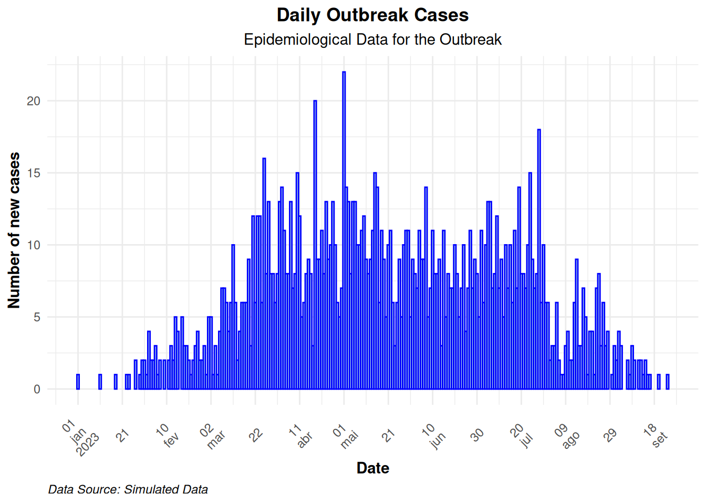
Use a opção group na função de mapeamento estético para visualizar uma epicurva com diferentes grupos. Se houver mais de um fator de agrupamento, use a opção facet_wrap(), conforme demonstrado no exemplo abaixo:
# Criar um objeto de incidência diária agrupado por sexo
daily_incidence_2 <- incidence2::incidence(
sim_data,
date_index = "date_onset",
groups = "sex",
interval = "day", # Agregar por intervalos diários
complete_dates = TRUE # Preencher datas ausentes
)# Fazer o gráfico da incidência diária em facetas por sexo
ggplot2::ggplot(data = daily_incidence_2) +
geom_histogram(
mapping = aes(
x = as.Date(date_index),
y = count,
group = sex,
fill = sex
),
stat = "identity"
) +
theme_minimal() + # aplicar tema minimalista
theme(
plot.title = element_text(face = "bold", hjust = 0.5), # título em negrito + centralizado
plot.subtitle = element_text(hjust = 0.5), # centralizar o subtítulo
plot.caption = element_text(face = "italic", hjust = 0), # legenda em itálico
axis.title = element_text(face = "bold"), # rótulos dos eixos em negrito
axis.text.x = element_text(angle = 45, vjust = 0.5) # rotacionar texto do eixo x
) +
labs(
x = "Date", # rótulo do eixo x
y = "Number of cases", # rótulo do eixo y
title = "Daily Outbreak Cases by Sex", # título do gráfico
subtitle = "Incidence of Cases Grouped by Sex", # subtítulo do gráfico
caption = "Data Source: Simulated Data" # legenda para contexto adicional
) +
facet_wrap(~sex) + # criar painéis separados por sexo
scale_x_date(
breaks = breaks, # definir quebras de data personalizadas
labels = scales::label_date_short() # formato de data abreviado para os rótulos do eixo x
) +
scale_fill_manual(values = c("lightblue", "lightpink")) # cores de preenchimento personalizadasWarning in geom_histogram(mapping = aes(x = as.Date(date_index), y = count, :
Ignoring unknown parameters: `binwidth` and `bins`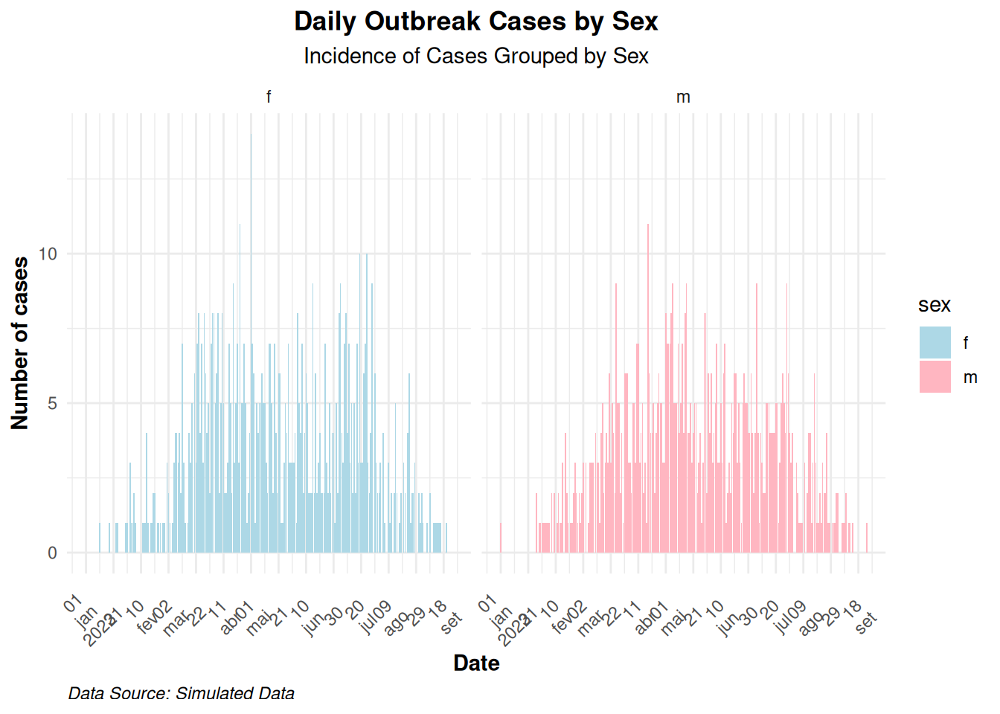
NotaPontos-chave
- Use o pacote
{simulist}para gerar dados sintéticos de surto. - Use o pacote
{incidence2}para agregar dados de casos com base em um evento com data e em outras variáveis para produzir curvas epidêmicas. - Use o pacote
{ggplot2}para produzir epicurvas com melhores anotações.